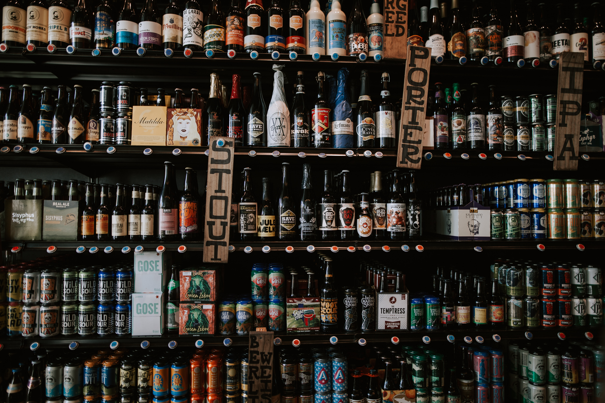

Around 95% of our food is dependent on soil, but 75% of soils have been degraded
due to human activity, impacting food production.
A hybrid modeling solution combining biophysical processes and Artificial Intelligence
can help assess the impact of nature-based solutions to improve soil health
in vulnerable regions like sub-Saharan Africa.


In the competitive market of web applications, designing user-friendly interfaces and experiences is essential for effective human-computer interaction.
Usability measurement techniques, such as heuristic evaluation, are crucial for ensuring that users' expectations are met.
However, the expertise level of evaluators greatly affects the effectiveness of this evaluation method.
Experts are able to identify significantly more usability issues compared to novices.
To address this discrepancy, this paper introduces Eye Movement Modeling Examples (EMMEs), a solution that demonstrates Jakob Nielsen's ten usability heuristics in a format that is easily understandable for all experience levels.
By incorporating expert knowledge, EMMEs aim to bridge the gap between novice and expert evaluators, enabling a more comprehensive evaluation of web application usability.

The date of the exam is coming closer and it is still so much you need to go through.
On top of that, it is often hard to find the most suitable learning path for yourself.
Why not using the help of AI and Eye Tracking?
In this work, we are trying to determine the learning style of participants
using AI models applied to the participants' eye movement behaviour analysis.

These days, more and more trucks are on our highways in order to get the deliveries done in time.
Scarcity in parking slots and huge demand sharpens the focus on truck drivers.
They suffer a lot and might even cause accidents when they are tired.
Not only the analysis of their facial expressions, but also e.g. the measuremnt of respiration rate allows a
deeper understanding of the drivers current condition, which might be a help to prevent dangerous highway accidents.
Climate change contributes to forests experiencing more extended and intense periods of heat, significantly raising the risk of forest fires.
Robotic landscape management, through the reduction of fuel accumulation, produces undeniable economic, social and environmental benefits.

The diverse range of bottles, each with varying shapes, undermines the efficiency of the deposit system.
Sorting the bottles requires extra time and effort for breweries as there are more unusable bottles to contend with.
To ensure a sustainable future, improvements must be made urgently.